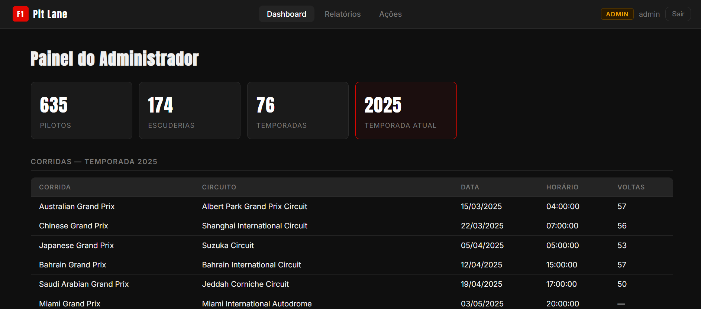

Detalhes do Projeto

Visão Geral do Projeto
O F1 Lab BD é um sistema web de consultas e relatórios sobre dados históricos da Fórmula 1, desenvolvido para a disciplina de Laboratório de Banco de Dados. O foco do projeto foi usar o banco como parte ativa da aplicação: em vez de montar consultas na API, a lógica de negócio e os relatórios ficam no PostgreSQL, em functions, views e triggers.
O sistema tem três perfis de acesso (Administrador, Escuderia e Piloto), cada um com seu próprio dashboard e seus relatórios. Os logins são criados automaticamente por triggers quando um piloto ou uma escuderia é cadastrado, e a API em FastAPI funciona como uma camada fina que autentica o usuário com JWT e chama as functions do banco.
Principais Aspectos Técnicos
Functions em PL/pgSQL
Os 7 relatórios e os dashboards foram implementados como functions que retornam TABLE. A API só executa SELECT * FROM fn_..., mantendo a lógica de negócio dentro do banco e as consultas reutilizáveis.
Triggers de Usuários
Triggers AFTER INSERT e AFTER UPDATE nas tabelas de pilotos e escuderias criam e sincronizam automaticamente o login de cada um (ex.: hamilton_d, ferrari_c), bloqueando duplicidades com RAISE EXCEPTION.
Views
Views como vw_resultados_completos (resultado com corrida, circuito, piloto e escuderia) e vw_aeroportos_brasil simplificam os joins e são reaproveitadas pelas functions dos relatórios.
Relatórios Avançados
Agregações com COUNT(*) FILTER, um relatório hierárquico com drill-down em 3 níveis (totais, circuitos e corridas de cada circuito) e cálculo de distância pela fórmula de Haversine para listar aeroportos a até 100 km de uma cidade.
Índices
Índices criados a partir dos filtros e joins de cada relatório (status, piloto e posição, país e tipo de aeroporto, circuito), para manter as consultas rápidas sobre a base histórica.
Autenticação e Perfis
Login com senha criptografada (bcrypt via pgcrypto), tokens JWT e controle de acesso por perfil (Admin, Escuderia e Piloto). Cada login e logout é registrado na tabela users_log.
Carga e Tratamento de Dados
Script de inicialização que cria o schema e importa os arquivos CSV/TSV com \copy por meio de tabelas de staging, tratando campos vazios, posições não numéricas e encodings diferentes antes de popular as tabelas finais.
API FastAPI
API em Python com FastAPI e psycopg2, usando queries parametrizadas, cadastro de pilotos e escuderias pelo admin e importação de pilotos via CSV em uma única transação, com rollback em caso de erro. Empacotada com Dockerfile.